Avant de remonter le temps et d'entrer dans le code, posons les bases.
Parce que oui, même si tu joues tous les jours, c'est bien de savoir ce qu'on appelle vraiment un "jeu vidéo".
Un jeu vidéo, c'est une application interactive sur un support électronique (PC, console, téléphone...), dans lequel un joueur interagit avec un environnement à l'aide d'une interface (souris, manette, clavier...).
Contrairement aux autres médias comme le cinéma ou la littérature, le jeu vidéo se distingue par son interactivité fondamentale.
Sans l'action du joueur, le jeu reste figé, en attente.
Cette caractéristique en fait un médium unique où le spectateur devient acteur de l'expérience qu'il vit.
Les jeux vidéo peuvent prendre des formes extrêmement variées : des puzzles minimalistes comme Tetris aux mondes ouverts complexes comme The Legend of Zelda: Breath of the Wild, en passant par des expériences narratives comme Kage no Michi ou des simulateurs comme Microsoft Flight Simulator qui reproduisent fidèlement la réalité.
Un contexte interactif – le joueur agit, et le jeu répond.
Une interface joueur/machine – clavier, manette, écran tactile... peu importe, faut pouvoir interagir !
Une expérience de jeu – avec des règles, des objectifs, et une bonne dose de fun (ou de rage).
Un support électronique – ordinateur, console, smartphone, borne d'arcade ou même montres connectées.
Un programme informatique – derrière chaque jeu se cache des lignes de code qui définissent ses règles et comportements.
L'industrie du jeu vidéo génère aujourd'hui plus de revenus que l'industrie du cinéma et de la musique réunies, avec plus de 175 milliards de dollars en 2024, touchant plus de 3 milliards de joueurs à travers le monde.
Une révolution culturelle et technologique qui a commencé avec de simples points lumineux sur un écran.
Et au tout début ?
Spoiler : il n'y avait pas encore Call of Duty.
Les débuts du jeu vidéo sont intimement liés à l'histoire de l'informatique elle-même.
Dans les années 1950, les ordinateurs étaient des machines massives occupant des salles entières, principalement utilisées pour des calculs scientifiques ou militaires.
C'est dans ce contexte que quelques pionniers ont eu l'idée révolutionnaire d'utiliser ces machines pour... s'amuser.
1958 – Tennis for Two
En 1958, en pleine Guerre froide, au Laboratoire national de Brookhaven, un physicien nommé William Higinbotham s’est demandé comment rendre les sciences plus attrayantes pour les visiteurs lors des journées portes ouvertes.
Sa réponse ?
Créer un jeu interactif sur un oscilloscope, qu’il a appelé Tennis for Two.
C’était un petit jeu de tennis très simplifié, vu de côté, où deux joueurs pouvaient s’affronter.
Le jeu fonctionnait sur un ordinateur analogique Donner Model 30, et les contrôles étaient rudimentaires : un boîtier avec un bouton pour frapper la balle, et un cadran pour choisir l’angle.
La balle, elle, suivait une trajectoire influencée par une simulation très basique de la gravité.
Ce projet n’a jamais été breveté, car il était vu comme une simple démo technique à l’époque.
Et pourtant, il s'agit bel et bien d’un des tout premiers jeux vidéo jouables à deux.
Tennis for Two - The Original Video Game
Tu peux voir juste au-dessus : une démo de Tennis for Two, le tout premier jeu vidéo à deux joueurs, créé en 1958 sur un oscilloscope.
1962 – Spacewar!
En 1962, du côté du MIT, des étudiants du Tech Model Railroad Club ont voulu pousser les limites du nouvel ordinateur PDP-1.
Emmenés par Steve Russell, ils ont passé plus de 200 heures à coder ce qui allait devenir un véritable pilier dans l’histoire des jeux vidéo : Spacewar!.
Le jeu mettait en scène deux vaisseaux spatiaux qui se canardaient tout en étant attirés par une étoile centrale, ce qui apportait une touche de réalisme grâce à une physique plutôt avancée pour l’époque.
Spacewar! n’était pas juste un jeu local : c’est aussi le premier à être distribué sur plusieurs machines.
Il tournait sur le PDP-1, un ordi qui coûtait plus de 120 000 dollars à l’époque — ce qui ferait quasiment un million aujourd’hui.
Les contrôles se faisaient au départ avec les switches du panneau de la machine, puis grâce à des manettes artisanales bricolées à la main.
Le code, quant à lui, tenait sur une bande perforée et a été partagé et modifié à foison.
Ce jeu a même inspiré Nolan Bushnell, celui qui allait fonder Atari quelques années plus tard.
Spacewar! est un des premiers jeux-vidéo qui a été développé sur PDP-1 (Programmed Data Processor-1) juste ci-dessous . Celui-ci est le premier ordinateur qui a été conçu par Digital Equipment Corporation (DEC).
Ces jeux, c'est un peu comme les dessins moches que tu faisais à 3 ans : simples, mais pionniers. Ils ont ouvert la voie.
1952 – OXO (Noughts and Crosses)
Souvent oublié dans l'histoire officielle, OXO est pourtant l’un des tout premiers jeux vidéo jamais créés.
Il a vu le jour en 1952, conçu par Alexander S. Douglas dans le cadre de sa thèse de doctorat à l’Université de Cambridge.
Le concept ?
Un simple jeu de morpion, aussi appelé tic-tac-toe, programmé sur l’ordinateur EDSAC.
À gauche, l’interface du jeu OXO (1952), premier morpion graphique programmé sur l’ordinateur EDSAC ; à droite, son créateur, Alexander S. Douglas, pionnier oublié des jeux vidéo, qui permit aux joueurs d’affronter la machine via un cadran téléphonique rotatif, bien avant l’ère des consoles et du grand public.
C’était le premier jeu à utiliser un affichage graphique numérique, ce qui, à l’époque, relevait de la science-fiction.
Le joueur affrontait l’ordinateur, et pour interagir avec lui, il utilisait... un cadran téléphonique rotatif !
Oui oui, tu tournais un numéro pour jouer.
Le jeu n’a jamais été commercialisé et n’était accessible qu’à quelques universitaires chanceux.
Un projet confidentiel mais sacrément visionnaire.
L'ordinateur de l'époque n'était pas plus puissant qu'une calculatrice moderne, mais c'était suffisant pour créer une expérience interactive révolutionnaire
— Alexander S. Douglas, créateur d'OXO
1972 – Naissance de PONG et du jeu vidéo commercial
Tout a commencé quand Nolan Bushnell, encore étudiant, découvre Spacewar! et a une révélation : les jeux vidéo pourraient avoir un potentiel commercial énorme.
En 1971, il tente un premier coup avec Computer Space, le tout premier jeu d’arcade commercialisé.
Sauf que voilà, l'interface était trop complexe, les joueurs n’accrochaient pas.
Il comprend vite la leçon : pour captiver le public, il faut de la simplicité immédiate.
Un jeu qui se comprend en moins de dix secondes. C’est là qu’arrive l’idée de PONG.
Développé avec Allan Alcorn, PONG reprend le principe de Tennis for Two, mais version ping-pong : deux barres, une balle, et c’est parti.
Distribué dans des bornes d’arcade, le jeu cartonne.
L’instruction sur l’écran était limpide : "Évite de rater la balle pour obtenir un score élevé".
La première borne a été installée dans un bar, le Andy Capp's Tavern à Sunnyvale, en Californie.
Coût de fabrication : environ 300 dollars.
Revenus hebdomadaires ?
Entre 300 et 400 dollars.
La machine était rentable dès la première semaine !
La première borne a été installée dans un bar, le Andy Capp's Tavern à Sunnyvale, en Californie.
En 1974, Atari vendait une borne PONG toutes les 90 minutes.
Et l’année suivante, une version domestique sortait en exclusivité chez Sears pour 98,95 dollars, soit environ 520 dollars actuels.
Le jeu est devenu un phénomène, popularisant les jeux vidéo dans les foyers et lançant véritablement l'industrie.
Ce succès fulgurant a aussi déclenché un procès avec Magnavox, qui possédait un brevet similaire pour leur console Odyssey... mais ça, c’est une autre histoire.
Anecdote : La première borne PONG est tombée en panne... parce qu'elle était trop utilisée et que la pièce était remplie de pièces de monnaie.
Ce qui était au départ un simple exercice d’entraînement pour Allan Alcorn est rapidement devenu le pilier fondateur de toute une industrie.
Des dizaines de copies ont vu le jour, ouvrant le premier vrai marché du jeu vidéo.
Sans le savoir, ils venaient de créer un empire.
Nous savions que nous avions un succès quand la borne s'est retrouvée tellement pleine de pièces qu'elle a cessé de fonctionner.
— Nolan Bushnell, fondateur d'Atari
L'explosion des années 80 : l'ère arcade
Direction les salles d'arcade ! Les années 80 ont été un véritable âge d'or pour ces temples lumineux et bruyants du jeu vidéo.
On entrait dans un autre monde : néons vibrants, sons électroniques hypnotisants, et alignements de bornes clignotantes qui attiraient les joueurs comme des papillons vers la lumière.
C'était un rituel, un repère, un terrain de jeu intergénérationnel.
Les jeux qui ont défini une génération
Tout commence avec Space Invaders en 1978.
Ce classique japonais, signé Tomohiro Nishikado, a tellement cartonné qu’il a causé une pénurie de pièces de 100 yens.
L’année suivante, Asteroids débarque et introduit un détail simple mais génial : les joueurs peuvent enregistrer leurs initiales dans le tableau des scores.
Puis en 1980, c’est l’explosion jaune : Pac-Man envahit le monde.
Conçu par Toru Iwatani pour séduire un public plus large, notamment féminin, le jeu devient un phénomène mondial.
Sa suite, Ms. Pac-Man, naît d’un hack non officiel... que Namco finira par adopter !
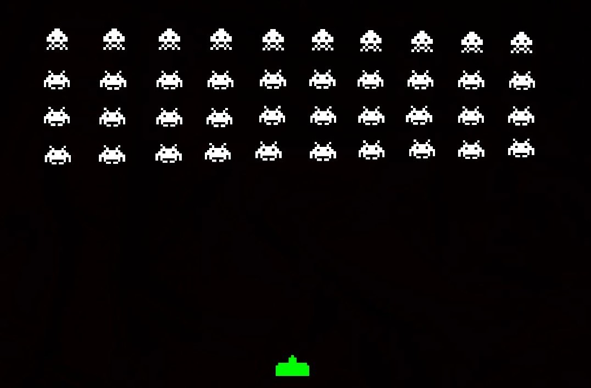
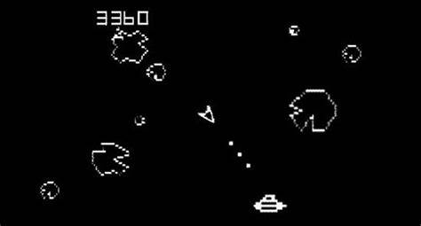
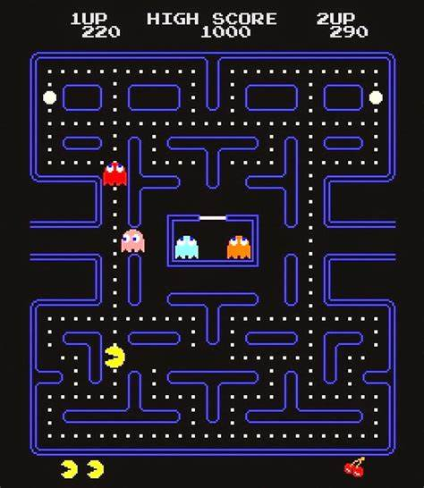
En parallèle, Miyamoto pose sa première pierre dans l’histoire du jeu vidéo avec Donkey Kong (on en reparle juste après ), où apparaît un certain Jumpman, futur Mario.
Galaga intensifie le gameplay de Space Invaders avec des vagues d’ennemis plus malines.
Et en 1983, Dragon’s Lair débarque avec ses graphismes époustouflants animés sur LaserDisc.
On avait jamais vu ça !
Quelques années plus tard, Gauntlet révolutionne l’expérience en permettant à quatre joueurs de coopérer en simultané, et Street Fighter II vient clore la décennie avec fracas en redéfinissant le jeu de combat en 1991, prolongeant l’âge d’or des arcades bien au-delà.
L'économie des arcades
Ces jeux imposaient leurs règles : peu de vies, une difficulté corsée, et des parties souvent expéditives, qui duraient rarement plus de trois minutes.
Mais chaque essai coûtait seulement 25 cents... ce qui n’a pas empêché les joueurs américains de dépenser près de 50 milliards de quarters dans les années 80.
Oui, milliards.
Les bornes n’étaient pas juste des machines : elles étaient des défis permanents, des aimants à ego, et des arènes où l’on pouvait gagner — ou perdre — son honneur.
Des films comme Tron ou The Last Starfighter célébraient cette culture, tandis que des compétitions officielles, parfois télévisées, voyaient émerger de véritables légendes.
On joue pas encore pour l'histoire ou les graphismes. On joue pour le high score et le gameplay pur.
Et au-delà du jeu, les arcades étaient des lieux de vie.
On y allait pour jouer, oui, mais aussi pour regarder les champions, apprendre leurs techniques, échanger, s’inspirer.
C’était aussi un terrain d’expérimentation pour les développeurs, qui pouvaient y tester des innovations trop coûteuses pour les consoles grand public.
Les arcades étaient nos arènes modernes. On y allait pour prouver sa valeur, battre des records, et gagner le respect de ses pairs.
— Walter Day, fondateur de Twin Galaxies, l'organisation officielle de records de jeux d'arcade
Du pixel au salon : l'arrivée des consoles
Dans les années 70 et 80, le jeu vidéo ne se limitait pas seulement aux arcades.
Parallèlement à ces bornes lumineuses, les consoles de salon ont fait leur apparition, permettant aux joueurs de profiter de leurs jeux directement à la maison, confortablement installés devant leur téléviseur.
La console de salon est devenue un élément central du divertissement familial et a marqué le début d'une ère où les joueurs pouvaient vivre des expériences vidéoludiques immersives, sans quitter leur foyer.
Les premières générations
Tout a commencé en 1972 avec la Magnavox Odyssey, la première véritable console domestique, créée par Ralph Baer.
Cette machine primitive permettait de jouer à quelques jeux simples sur la télévision, mais le concept a immédiatement séduit.
La Magnavox Odyssey était une console sans microprocesseur, où les jeux étaient basés sur un circuit intégré à la console.
Bien qu'elle ait été rudimentaire comparée aux standards d'aujourd'hui, elle a ouvert la voie à un marché en pleine expansion.
La Magnavox Odyssey a marqué le début de l'ère des consoles domestiques. Elle a fait de l'impossible une réalité.
- Ralph Baer
Quelques années plus tard, en 1977, l'Atari 2600 débarque et révolutionne le marché avec ses cartouches interchangeables, permettant ainsi une plus grande variété de jeux à la maison.
L'Atari 2600 devient une référence dans l'histoire des consoles domestiques.
Le succès de cette machine, accompagnée de jeux emblématiques comme Space Invaders et Pong, a permis de démocratiser les jeux vidéo au grand public.
L'Atari 2600 n'était pas juste une console. C'était une porte ouverte vers un nouveau monde de jeux.
- Nolan Bushnell, créateur d'Atari
Puis, en 1979, Mattel lance l'Intellivision, une console qui vient sérieusement concurrencer Atari avec ses graphismes un peu plus sophistiqués et ses contrôles innovants.
L'Intellivision se distingue par sa capacité à offrir des jeux aux graphismes supérieurs à ceux d'Atari 2600,
tout en introduisant un nouveau type de manette avec des boutons numérotés, une innovation qui influencera les manettes de jeu modernes.
L'Intellivision n'était pas juste un jeu. C'était un univers où chaque manette devenait une extension de la pensée du joueur. (Extrait d'un article sur les premières consoles)
En 1982, la ColecoVision rejoint la compétition.
Cette console offre des graphismes presque aussi détaillés que ceux des bornes d'arcade de l'époque, ce qui lui permet de se distinguer dans un marché saturé.
Elle introduit des jeux comme Donkey Kong et Zaxxon, qui font fureur.
Le mythique jeu Donkey Kong jouable sur la nouvelle console du moment, la ColecoVision .
Cependant, en 1983, l'industrie subit le "Video Game Crash of 1983", un krach où le marché est saturé de consoles et de jeux de mauvaise qualité, marquant un tournant décisif pour l'ensemble du secteur.
Un exemple frappant est le tristement célèbre jeu "E.T." d'Atari, qui a été développé en seulement cinq semaines et est devenu l'un des pires jeux (si ce n'est LE pire) de l'histoire du jeu vidéo.
Ce jeu, mal conçu et incohérent avec le film, a été un énorme échec commercial et a précipité la chute de l'industrie.
Ce fiasco, symbolique d'une époque où les attentes étaient trop élevées et d'une qualité trop souvent négligée, entraîne une chute dramatique des revenus de l'industrie, passant de 3,2 milliards de dollars en 1983 à seulement 100 millions en 1985, soit une baisse de 97%.
L'histoire du jeu E.T. d'Atari est celle d'un rêve déçu, où l'innovation a été rattrapée par la précipitation.
1985 – L'arrivée du sauveur moustachu : Nintendo
En 1985, c’est Nintendo qui arrive à la rescousse avec la sortie de la NES (ou Famicom au Japon).
Contrairement aux autres consoles, Nintendo choisit de vendre la NES non pas comme une simple machine de jeux vidéo, mais comme un véritable système de divertissement, un concept plus large qui capte l’attention des familles.
Pour garantir la qualité des jeux, Nintendo introduit son fameux "Seal of Quality", une certification qui rassure les joueurs.
Mario, c'est pas juste un plombier. C'est le symbole du renouveau du jeu vidéo.
La NES connaît un immense succès, grâce à des jeux cultes comme Super Mario Bros., Zelda, Metroid et Kirby's Adventure qui introduisent des expériences de jeu profondes, avec des narrations, des mondes visuels riches et des mécaniques novatrices.
Ce sont ces jeux qui marquent la naissance du jeu narratif et immersif tel que nous le connaissons aujourd'hui.
En plus, sur le plan technique, la NES introduit des améliorations comme le scrolling fluide et des musiques mémorables.
En fin de compte, la console se vend à plus de 60 millions d'unités dans le monde.
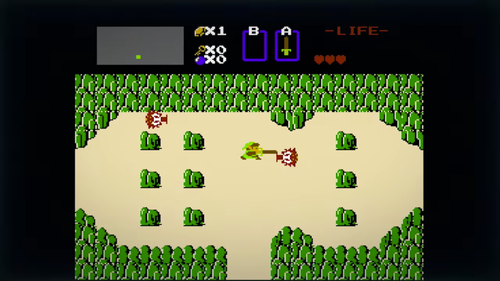
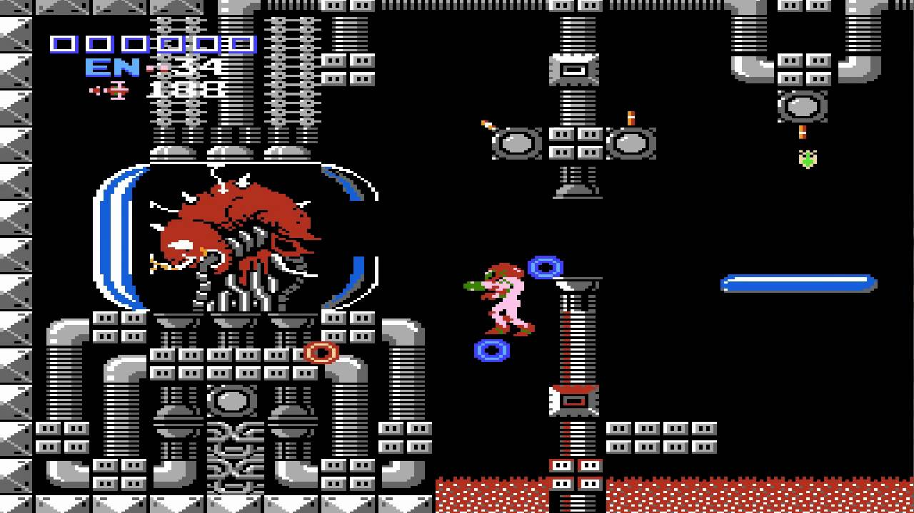
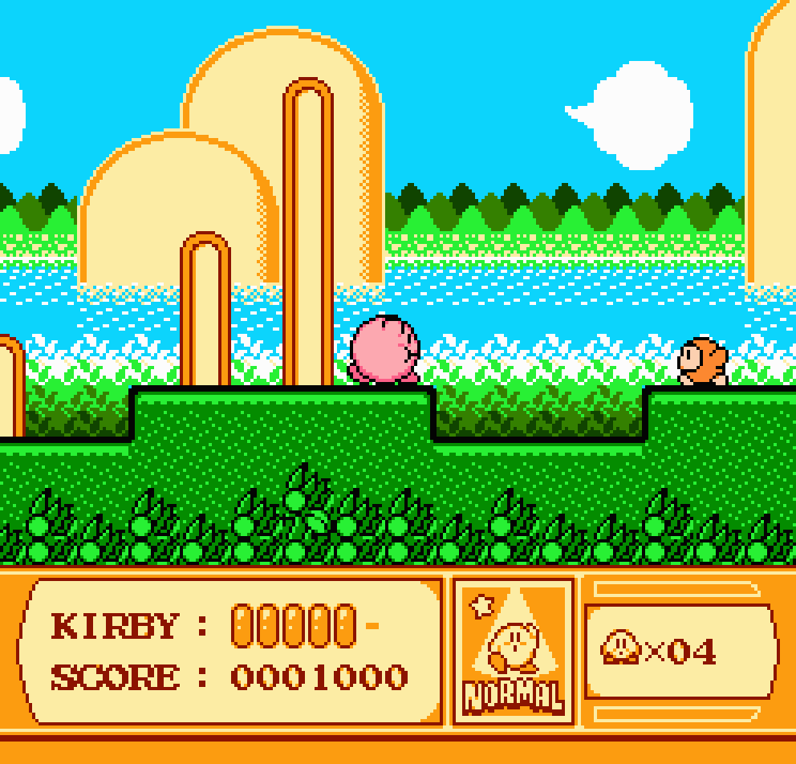
Ci-dessus , la NES et ses différents jeux cultes (dans l'ordre : Super Mario Bros, Zelda, Metroid et Kirby's Adventure)
1988-1994 – L'ère 16-bit et la guerre des consoles
Avec l’arrivée de la Sega Mega Drive en 1988, Sega lance un défi direct à Nintendo, initiant ainsi la première grande "guerre des consoles".
Nintendo répond en 1990 avec la Super Nintendo (plus couramment appelée SNES), une machine qui continue de pousser la qualité des jeux vers de nouveaux sommets.
Sega mise sur la vitesse et des titres comme Sonic the Hedgehog, un jeu rapide et plein de style qui séduit les adolescents.
De son côté, Nintendo met l'accent sur des franchises bien établies, comme Super Mario World et The Legend of Zelda: A Link to the Past, qui plongent les joueurs dans des mondes plus riches et profonds.
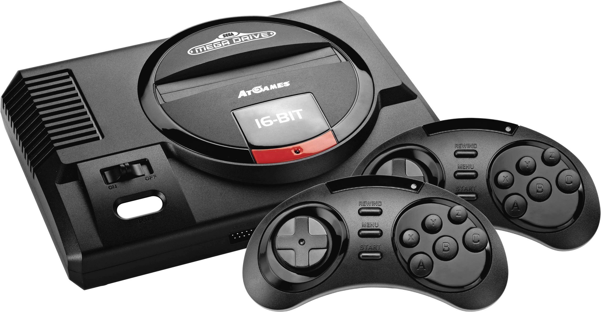
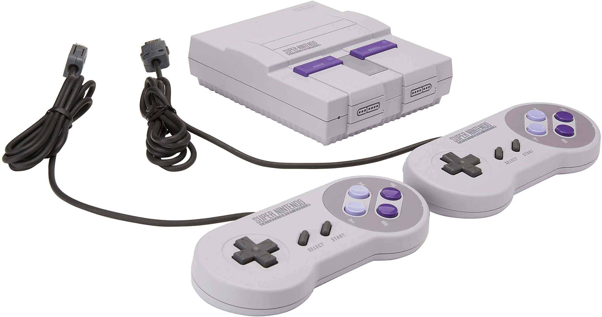
Cette période voit aussi l’émergence des premières campagnes marketing agressives, avec des slogans comme "Genesis does what Nintendon’t" (tu peux d'ailleurs retrouver le trailer juste en dessous ), visant à tailler des parts de marché à Nintendo.
Les jeux deviennent de plus en plus complexes et longs, avec l’introduction des sauvegardes.
En 1992, Sega ajoute un nouvel élément en introduisant des jeux sur CD-ROM via le SEGA CD, une innovation qui annonce l’arrivée du multimédia dans le monde du jeu vidéo.
Genesis does what Nintendon't
La guerre des consoles n'était pas juste une bataille de machines, c'était un affrontement entre philosophies du jeu vidéo .
1994-2006 – La révolution 3D
La grande révolution de cette époque arrive avec l'entrée de Sony dans l’industrie du jeu vidéo.
Initialement, Sony travaillait avec Nintendo pour développer un périphérique CD pour la Super Nintendo, mais après une rupture avec Nintendo, Sony décide de se lancer seule et crée la PlayStation, une console qui va marquer un tournant en démocratisant la 3D.
En 1994, la PlayStation arrive sur le marché, permettant aux développeurs de créer des jeux en 3D pour la première fois, avec des graphismes plus réalistes et une toute nouvelle manière de jouer. Comme avec le jeu de course Gran Tourismo .
En 1996, Nintendo lance sa propre machine 3D, la Nintendo 64, qui introduit le stick analogique, une innovation qui permet un contrôle plus précis des personnages dans les jeux.
Mais la PlayStation 2, lancée en 2000, devient la console la plus vendue de l’histoire, avec plus de 155 millions d’unités écoulées dans le monde entier.
En 2001, Microsoft entre dans la course avec la Xbox, marquant un nouveau chapitre dans l’histoire des consoles de jeux.
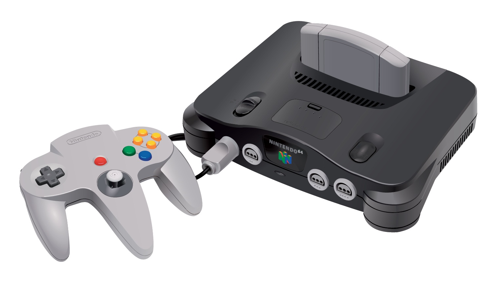
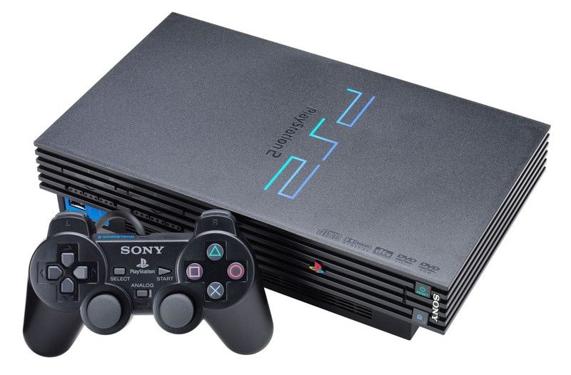
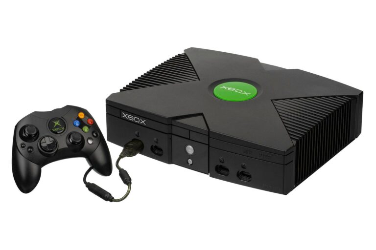
Entre 1996 et 2001, trois consoles majeures apparaissent sur le marché : la Nintendo 64, la PS2 (Playstation 2) et la Xbox
Cette époque voit également l'émergence de jeux emblématiques comme Final Fantasy VII, Metal Gear Solid, Super Mario 64, et GTA III, qui redéfinissent le jeu vidéo avec des mondes ouverts, des narrations complexes et des graphismes à couper le souffle.
2006-aujourd'hui – L'ère moderne
Depuis 2006, les consoles sont devenues de véritables centres de divertissement multimédia, brouillant la frontière entre le jeu vidéo et les autres formes de médias sociaux.
En 2006, Nintendo révolutionne encore une fois le secteur avec la Wii, qui introduit les contrôles par détection de mouvement.
La Wii permet aux joueurs de se déplacer physiquement pour interagir avec le jeu, un concept totalement inédit.
En 2013, Sony et Microsoft lancent respectivement la PlayStation 4 et la Xbox One, en mettant un accent particulier sur les services en ligne et le partage social.
Puis, en 2017, la Nintendo Switch arrive avec un concept hybride, permettant aux joueurs de l’utiliser aussi bien en mode portable qu’en mode salon.
Enfin, en 2020, la PlayStation 5 et la Xbox Series X débarquent avec des fonctionnalités impressionnantes comme la réalité virtuelle, le ray-tracing et des temps de chargement quasi inexistants.
Les consoles de jeux vidéo, de 1970 à 2022
Les jeux modernes, comme The Last of Us, Fortnite, Minecraft, ou The Legend of Zelda: Breath of the Wild, continuent de repousser les limites du gameplay, de l'immersion et de l'interactivité dans des mondes toujours plus vastes et détaillés.
Le matériel ne sert qu'à faire fonctionner les jeux. Ce sont les jeux qui font vendre une console.
— Satoru Iwata, ancien président de Nintendo
Les grands moments du Jeu Vidéo
Année
Événement
Impact sur la création de jeux vidéo
1958
Tennis for Two
1er jeu interactif – fondations de l’interactivité numérique
1962
Spacewar!
Premier jeu distribué – débuts du partage logiciel
1972
PONG
Premier succès commercial – naissance de l'industrie
1985
Super Mario Bros.
Structuration du level design, sauvetage de l'industrie
Le meilleur jeu des dernières décennies est apparu
Shigeru Miyamoto (grand maître incontesté et créateur de Mario et Zelda) a dit un jour :
Les jeux les plus simples ont posé les bases des jeux les plus complexes. Comme quoi, un pixel peut changer le monde.
Séquences de gameplay légendaires
Certains jeux ont marqué l’histoire non seulement pour leurs ventes, mais pour leurs séquences de gameplay devenues cultes. Voici une sélection d’images emblématiques qui parlent à tous les joueurs :
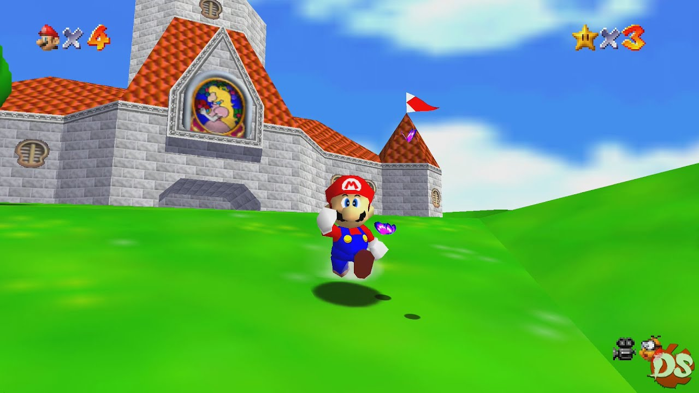
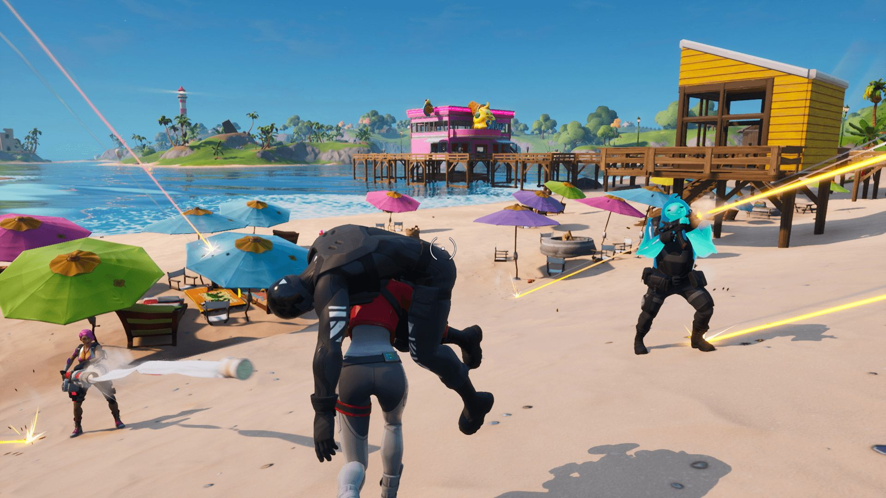
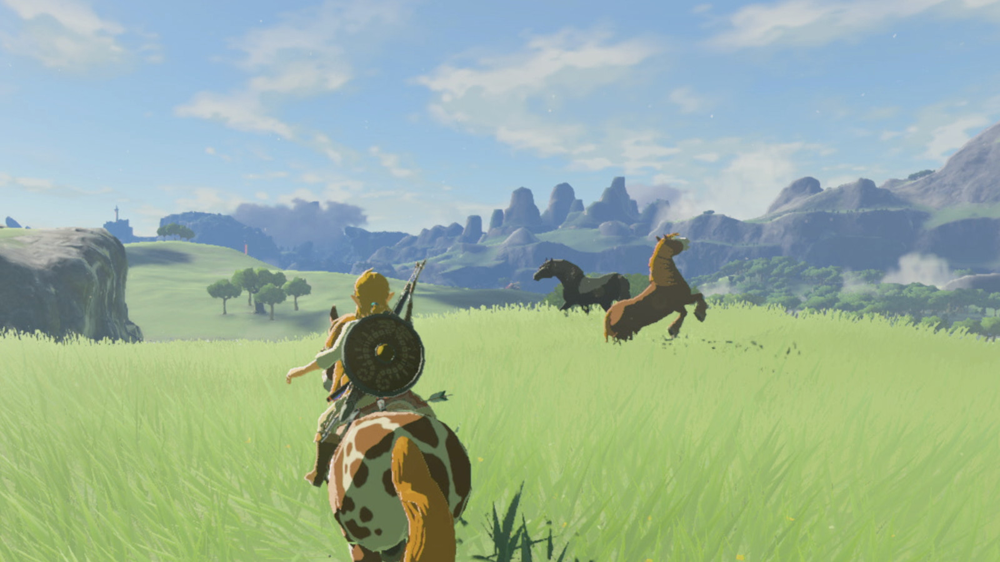
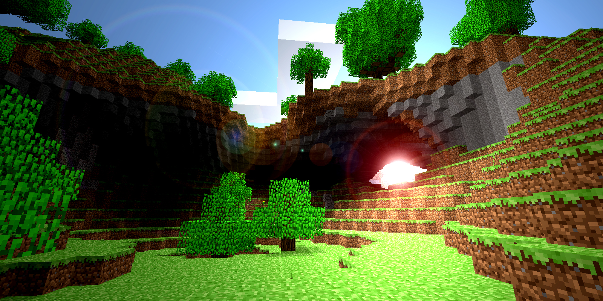
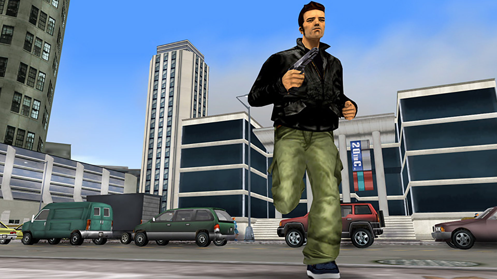
Ces instants de jeu ont défini des générations. Un screenshot, une ambiance, et tout un monde revient en mémoire.
L’évolution des graphismes du jeu vidéo
Des premiers points lumineux de Tennis for Two aux mondes virtuels photo-réalistes d'aujourd'hui, le jeu vidéo a parcouru un chemin extraordinaire en à peine 70 ans.
Cette évolution rapide témoigne de la créativité humaine et de notre désir constant d'explorer de nouvelles formes d'expression et d'interaction.
La vidéo ci-dessus illustre parfaitement cette transformation graphique, marquant les grandes étapes qui ont façonné l’esthétique vidéoludique au fil des décennies.
Hommage aux Classiques du Jeu Vidéo
La vidéo ci-dessous rend hommage à trois jeux cultes en les combinant dans un gameplay unique.
Elle commence avec des visuels de Pong, le tout premier jeu de tennis virtuel, pour montrer la simplicité fondatrice du jeu vidéo.
Ensuite, elle plonge dans l'univers de Pac-Man, avec son labyrinthe, ses fantômes et ses pastilles, évoquant l'émergence de jeux plus dynamiques et colorés.
Enfin, elle intègre l'ambiance tendue de Space Invaders, où le joueur affronte des vagues d'ennemis, marquant l'arrivée des jeux d'action.
L'ensemble est un clin d'œil rétro qui montre comment ces classiques ont posé les bases des jeux modernes, en combinant fun, tension et inventivité.
Les jeux rétro possèdent une qualité presque magique : une simplicité accessible qui cache une profondeur de gameplay remarquable.
Avec des graphismes limités à quelques pixels et des mécaniques qu'on pourrait résumer en une phrase, ils ont pourtant captivé des millions de joueurs et posé les fondations de genres entiers.
Prenons Pong : deux rectangles blancs, un point qui rebondit, et pourtant les matches pouvaient devenir intenses, stratégiques, presque comme un véritable sport.
Ou Space Invaders, où la descente implacable des aliens créait une tension croissante renforcée par l'accélération progressive de la musique.
Ces jeux ne racontaient pas d'histoires élaborées, mais ils créaient des émotions authentiques: la frustration, l'excitation, la fierté d'améliorer son score.
Ils ont dit que PONG était trop simple. Bah, ça les a fait rager quand même .
Cette époque a aussi vu naître des innovations techniques remarquables.
Pac-Man, par exemple, utilisait une technique appelée "tile mapping" pour économiser la mémoire limitée des machines, permettant de créer des labyrinthes complexes avec un minimum de ressources.
Les développeurs de l'époque étaient contraints par la technologie à trouver des solutions créatives, produisant des jeux qui restent jouables et agréables près de 50 ans plus tard.
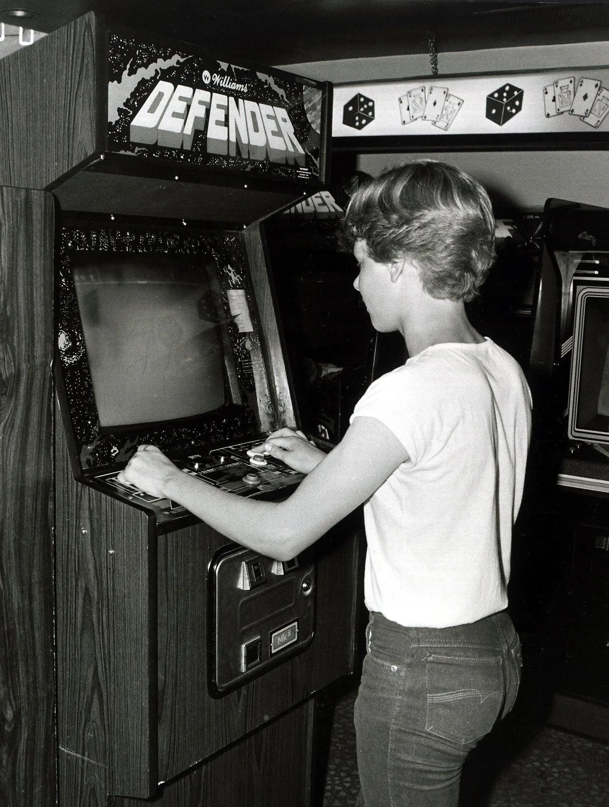
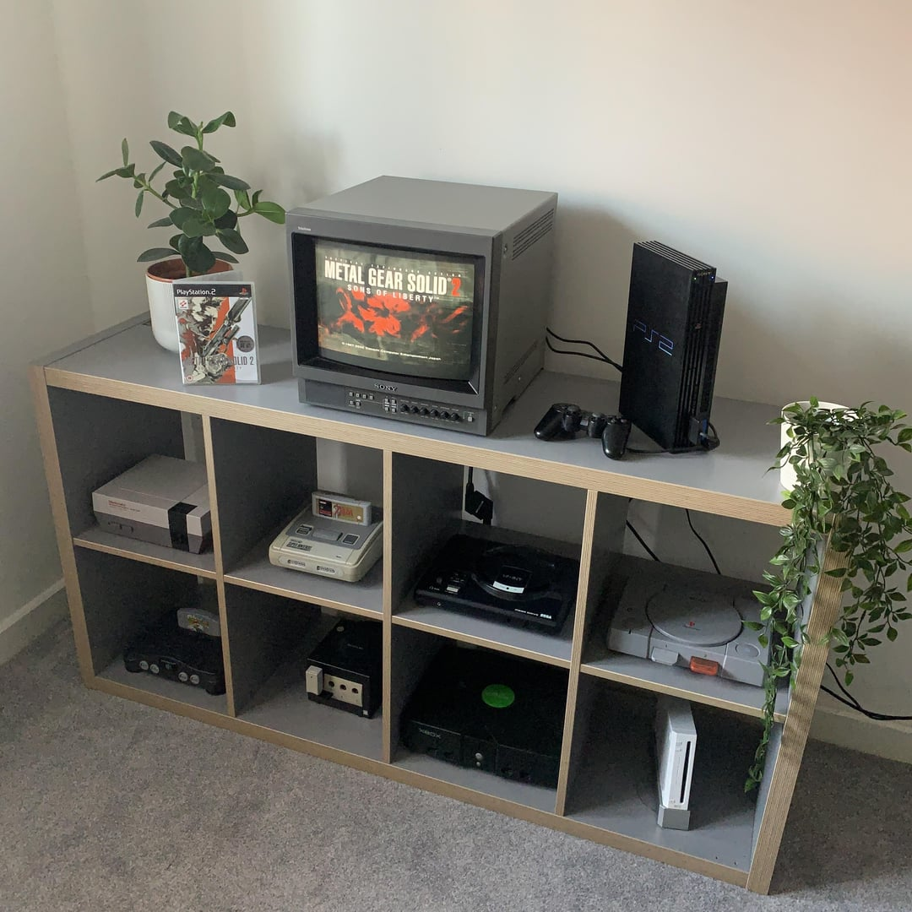
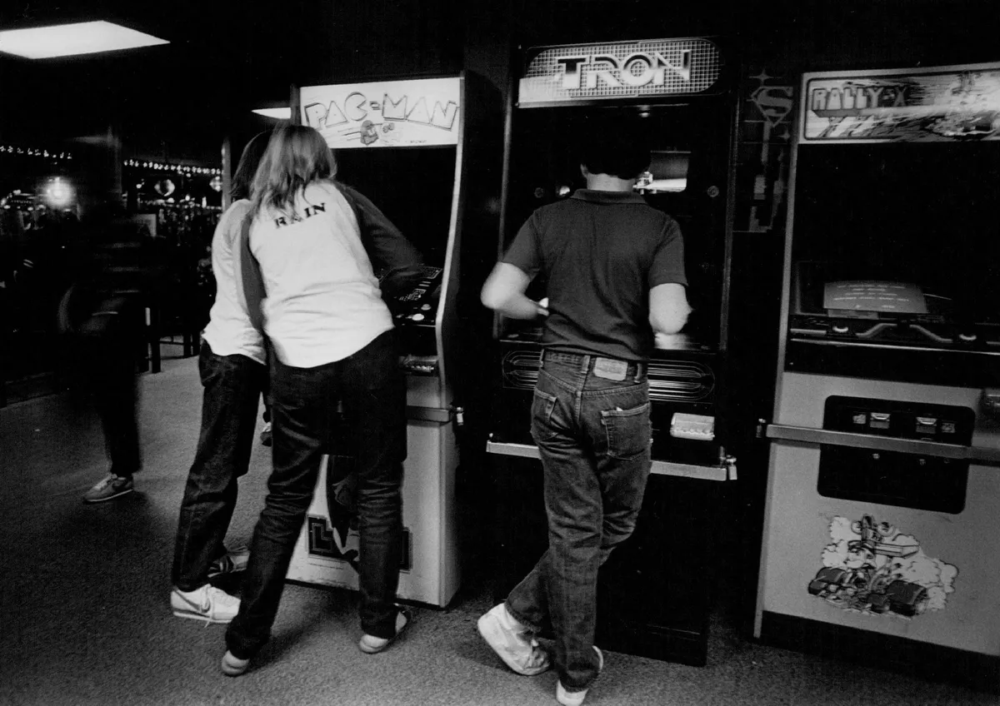
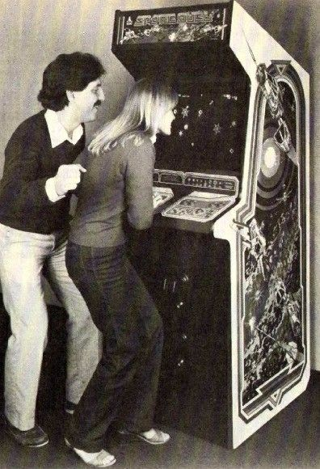
L'héritage durable des pionniers
Ces jeux classiques ont non seulement défini leurs propres genres, mais ils continuent d'influencer le design de jeux modernes.
Les mécaniques fondamentales de Pong se retrouvent dans tous les jeux de sports virtuels.
Le concept de niveaux progressifs avec difficulté croissante, popularisé par Space Invaders, est devenu un standard. Et la chasse aux high scores reste un élément motivationnel puissant, même dans les jeux les plus sophistiqués d'aujourd'hui.
Plus impressionnant encore : ces jeux ont traversé les générations.
Des grands-parents qui ont joué à Pong dans les années 70 peuvent aujourd'hui partager cette expérience avec leurs petits-enfants.
Dans un medium technologique qui évolue à vitesse fulgurante, cette longévité est remarquable et témoigne de la qualité intemporelle de leur design.
Quand j'ai conçu Pac-Man, j'ai essayé de créer un jeu que les femmes apprécieraient aussi. Les jeux d'arcade étaient remplis de jeux violents où vous tuiez des extraterrestres. J'ai voulu créer quelque chose de coloré et amusant.
— Toru Iwatani, créateur de Pac-Man
En résumé : ce qu’il faut vraiment retenir
L’histoire du jeu vidéo, c’est celle d’une ascension fulgurante : d’un simple loisir d’ingénieurs curieux à un pilier culturel incontournable. En moins d’un siècle, ce média a bouleversé les codes de la narration, redéfini l’art interactif et marqué plusieurs générations de joueuses et joueurs.
Les grandes ères du jeu vidéo
Le parcours du jeu vidéo peut se lire comme une véritable saga. Chaque époque a apporté son lot d’innovations, de crises et de révolutions technologiques. Voici les grandes étapes de cette aventure numérique :
Phase expérimentale (1950-1970) – Premiers prototypes en laboratoire, balbutiements du média.
Naissance commerciale (1971-1983) – Pong, Atari et l’ère des bornes d’arcade.
Renaissance (1985-1994) – Nintendo relance l’industrie, explosion des genres classiques.
Révolution 3D (1995-2005) – Immersion, narration, univers en profondeur.
Ère du connecté (2006-2015) – Internet transforme le jeu en expérience sociale.
Ère hybride (2016–aujourd’hui) – Réalité virtuelle, cloud gaming, IA : les frontières s’effacent.
Une ligne du temps, des révolutions
Si on regarde dans le rétroviseur, certains titres ont agi comme des tremplins, propulsant toute l’industrie vers de nouveaux horizons. Voici quelques jalons qui ont marqué l’évolution du médium :
1958
Tennis for Two
Premier jeu interactif de l’histoire, créé sur oscilloscope par William Higinbotham.
1972
PONG
Premier hit commercial, démocratise l’arcade et lance Atari.
1985
Super Mario Bros.
L’ère du jeu narratif commence, Nintendo sauve l’industrie du krach.
1986
The Legend of Zelda
Invention du monde ouvert non-linéaire et de la sauvegarde.
1993
DOOM
Révolutionne les graphismes 3D, introduit le modding et le multijoueur en réseau.
2001
Grand Theft Auto III
Premier véritable monde ouvert en 3D, influence tous les jeux modernes.
2009
Minecraft
Réinvente le genre sandbox et devient un phénomène culturel mondial.
2023
Baldur's Gate 3
Retour des RPG complexes et profonds, marquant l'hégémonie des jeux narratifs.
Le jeu vidéo, reflet de notre époque et miroir de notre imagination collective.
Des pixels de Tennis for Two aux mondes persistants de Baldur’s Gate 3 ou du cloud gaming, le jeu vidéo témoigne d’une seule chose : notre envie constante de jouer, de raconter, de créer. Et ce n’est que le début.
Et qui sait ? Le prochain chapitre s’écrit peut-être déjà avec Kage no Michi...
Et maintenant... on passe de l’autre côté de l’écran
En quelques décennies, le jeu vidéo est devenu un titan culturel et technologique.
Mais derrière chaque chef-d’œuvre, il y a une idée, une équipe, des outils, et surtout beaucoup de passion.
Maintenant que tu connais son histoire, il est temps de découvrir comment un jeu prend vie, depuis la toute première étincelle jusqu'au moment où tu appuies sur "Start".
Alors, prêt à plonger dans les coulisses de la création ?
 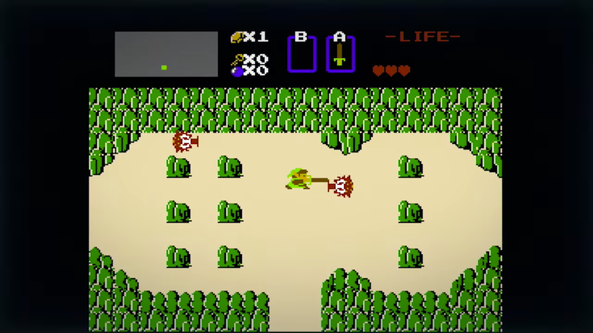
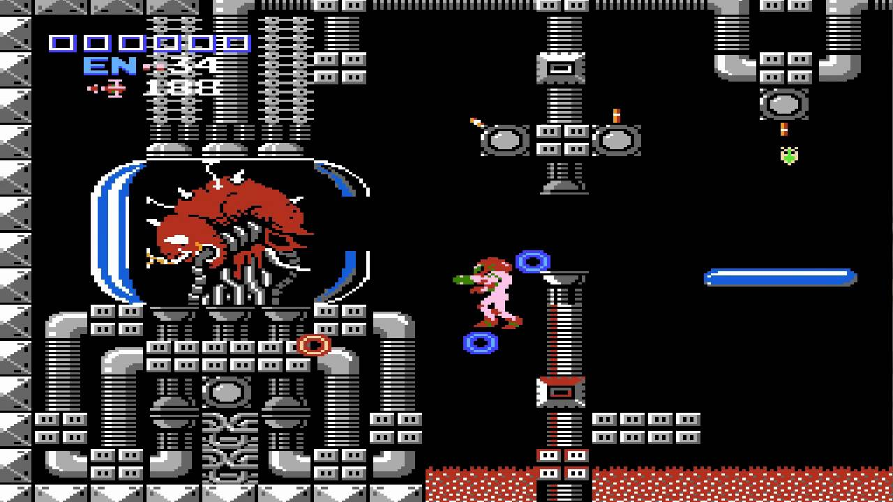
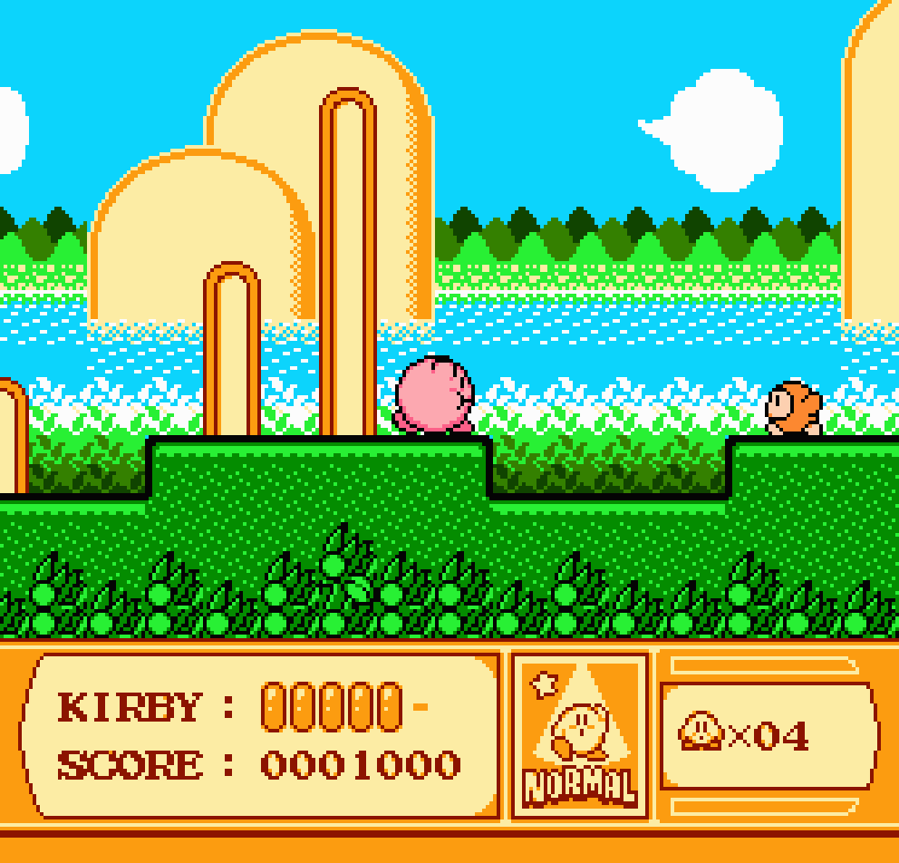
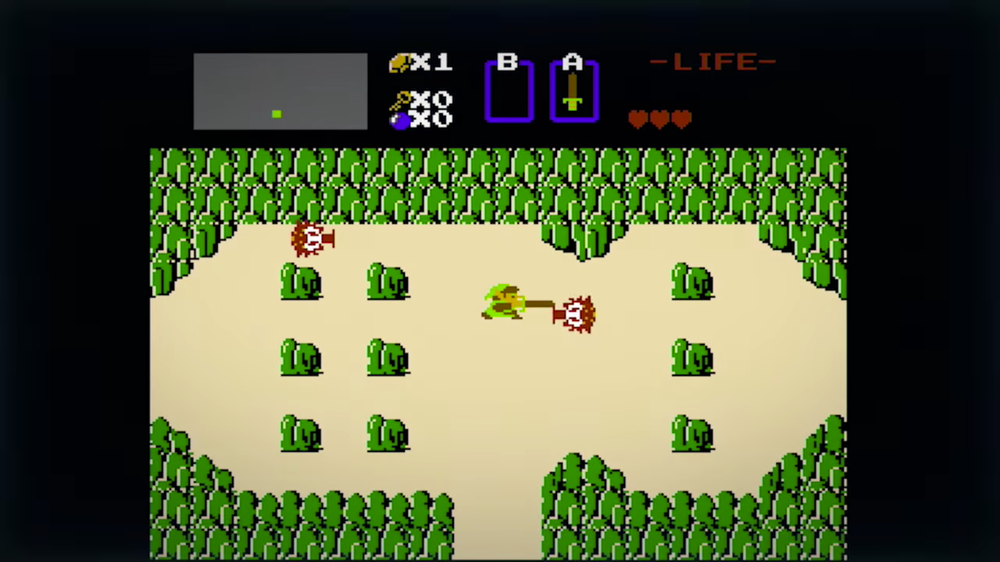
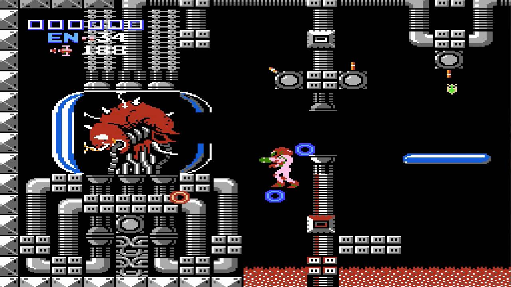
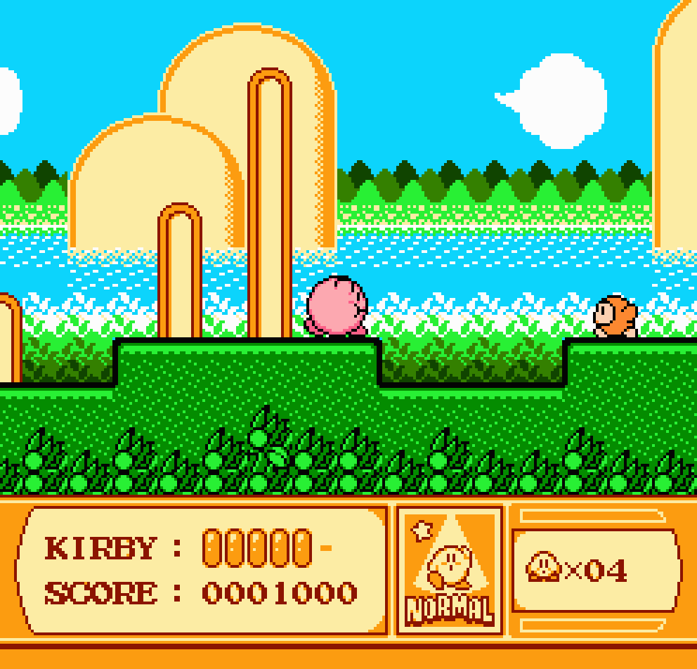